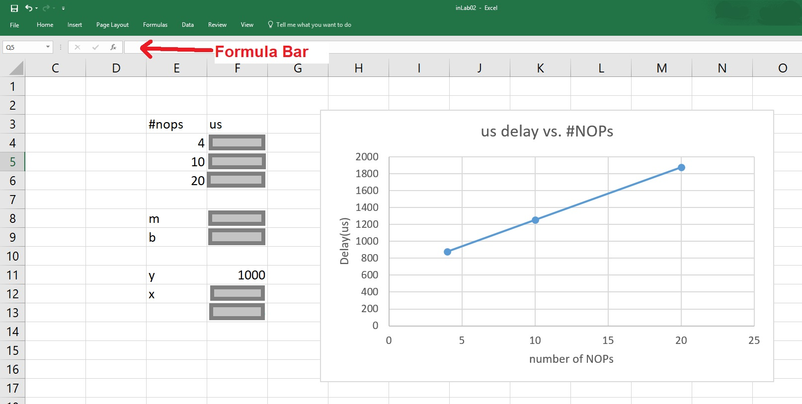

EENG 383
In Lab 2 - Morse CodesRequirements
Working in teams of two, read through the following lab activity and perform all the actions prescribed. You do not need to document bullet items. Make a record of your response to numbered items and turn them in a single copy as your teams solution on Canvas using the instructions posted there.Include the names of both team members at the top of your solutions. Use complete English sentences when answering questions. If the answer to a question is a table or other piece of art (like an oscilloscope trace or a figure), then include a sentence explaining the piece of art. Only include your answers, do not include the question-text unless it is absolutely needed.
Objective
The objective of this lab is to familiarize you with the MPLAB X development environment so that you can perform simulations with and without hardware. This lab will introduce you to two important tools, the oscilloscope and excel spreadsheets. You will use these frequently throughout the term.External Hardware
Today you will write code that you can interact with through a button (input) and an LED (output). In order to accomplish this you will need understand how these devices are wired and controlled by the PIC.- Open the schematic for the development board and locate the circuit for the
the push button labeled "TOP". Determine the voltage (0v or 3.3v) and logic
level (logic 0 or logic 1) that pin RA2 will see for the two possible states
of the push button listed in the table below.
You can verify your answers by connecting the bench digital multimeter (DMM) to the RA2 header break-out pin on the development board as follows. Power-up the DMM by pressing the power-on button on the lower left of the DMM. Next plug-in a black cable to the black COM jack on the DMM. Plug-in a red cable to the upper right red jack labeled "VΩHz". Press the white "DC V" button on the DMM. Connect the other end of the black cable to the ground loop on the development board. Connect the other end of the red cable to pin RA2 on the break-out header on the development board (lower right of the PIC 18F25K22). Pressing and releasing the TOP button should change the value displayed on the DMM.
Button state Voltage at RA2 Logic level at RA2 Unpressed Pressed
We will be illuminating the LED at the bottom of the board by connecting
a jumper wire from RB5 to either the R, G, or B header pin. In order
to illuminate the LED you will need to assert a logic level on a PIC
pin. The relationship between the logic level and illumination state
of the LED is investigated in the following question.
- Open the schematic for the development board and locate the circuit for the
the RGB LED labeled "SMT_RGBLED". Determine the voltage (0v or 3.3v) and logic
level (logic 0 or logic 1) that the signal connected to R/G/B need to drive
the LED into one of its two states (illuminated or off). If you are having
problems with this, try the experiment described after the table below.
Verify your answers by connecting a R/G/B header pin to a VCC/GND header pins surrounding the PIC using jumper wire as shown in the photo below.LED state Voltage at R/G/B Logic level at R/G/B Illuminated Off 
Firmware Organization
Since today is the first time that most of you will have used the MPLAB X development environment we will first review the basics of how to create and simulate your code before diving into how the code manipulates the I/O pins of the PIC.Create a MPLab X project
Start by launching MPLabX on your PC. Then select File → New Project.- In the New Project pop-up (Step 1: Choose Project)
Categories: Microchip Embedded
Project: Standalone Project
Next> - In the New Project pop-up (Step 2: Select Device)
Family: Advanced 8-bit MCUs (PIC18)
Device: PIC18F25K22
Next> - In the New Project pop-up (Step 3: Select Header)
Select Tool: ⬤ SNAP
Next> - In the New Project pop-up (Step 6: Select Compiler)
Select Compiler: XC8 (latest version)
Next> - In the New Project pop-up (Step 7: Select Project Name and Folder)
Project Name: inLab02
Project Location: hornetDrive\EENG383\labs
Finish> - In the project manager area of MPLAB X IDE, right mouse click on Source Files and select New → C main file …. You may need to expand the "inLab02" project to reveal "source files".
- In the New C Main File pop-up (Step 2: Name and Location)
File Name: inLab02.c
Finish - Open inlab02.c and cut-and-paste the contents into the inlab02.c tab of the editor area. Yes, you should delete the default template provided by the MPLab X IDE.
- In your own words, what does the "#asm" directive do? You can find information in section 5.12.2 of the MPLAB® XC8 C Compiler User’s Guide. A link to this document is posted on the main course web page.
- Look-up the NOP instruction on page 388 of the PIC18(L)F2X/4XK22 Data Sheet. A link to this document is posted on the main course web page. Describe, in your own words, what this instruction does?
- In the inLab02 program, how is LED_PIN defined? What happen when you assign a value to this "variable"?
- When line 66, "LED_PIN^=1;" is executes, what behavior do you expect to see from the LED?
- Select the Classes tab in the Project Manager window. Expand the inLab02 selection, then the Libraries selection and then the Microchip\xc8\v1.38\include selection. Scroll down and double click on PORTA (NOT PORTAbits_t). Click Yes on the pop-up warning. Record the assembly language definition for PORTA (a couple of lines below the "#define PORTA PORTA" statement - it's the stuff inside the quoted asm statement). Note "equ" stands for equate and is just like a #define.
- Look at section 5.4.4. on page 77,78 of the "Microchip PIC18F25K22 Data Sheet". From the information on these pages interpret the meaning of the PORTA definition. Note when the technical documents describe a hexadecimal number they place the letter "h" after the numerical value. In order to solve this problem you will need to reference your answer to problem 7.
Firmware Operation
This program is designed to blink the LED attached to RB5 at 500Hz when the TOP button on the development board is pressed. Its important to note that in order to blink an LED on and off at 500Hz, the LED pin must be toggled 1000 times a second (or once every 1ms). This point will be important in the development of the code.Before you start the following task, connect pin RB5 to one of the RGB header pins using a jumper wire.
Debugging code on the development board
There are times when you are having difficulty understanding what your program is doing that it will be handy to be able to single step through your code. Since we want the PIC 18F25K22 to be under the control of the MPLab X IDE, we need to the two connected via the PICkit 3. For this reason, when debugging your code through the MPLab X IDE, you must keep the PICkit 3 connected to the development board. While working through the following instructions if you find the instructions unclear, try consulting the figure below for some useful terms.- Connect the development board to a USB port on the PC.
- Connect the SNAP to a USB port on the PC.
- Connect the SNAP to the development board so that the white triangle on the SNAP and the development board align.
- In project management window right mouse click on project name (inLab02) and select Properties. In the Project Properties pop-up select "Conf" in the Categories pane and then "SN: BURxxxxxxxxx" in the Hardware Tool pane (the x's are the unique ID number found on the back of your PICkit 3). Then click Apply and then OK.
- Build the project by clicking the Debug Project in the toolbar area (to the right of the blue circular arrow). You can also click Debug → Debug Project (inLab02). This process may take 2-3 minutes. During this time, you should see the project build in the Output → inLab02 (Build) window and then some activity in the Output → PICkit3 window.
- When your program is running, you will notice a green progress square moving in the lower right corner of the MPLab X window and an orange "Pause (Ctrl+Alt+Pause)" button in the simulator control area of the toolbar. Go ahead and press the orange pause button. Your program should be paused on line 61.
- BUTTON_PIN is a reference to the value of the TOP button on the development board. Note, that your development board is upright when Blaster is in his correct orientation. Now press and hold down the TOP button the development board (changing the value of BUTTON_PIN to 0) while pressing the F8 key several times. You should notice that the program has stepped to the "while (BUTTON_PIN == 0);" line of code and is holding there because the TOP button is sending a logic 0 to the PIC.
- Now release the TOP button on the development board and press F8 several more times and iterate through the while loop on lines 65-68 several times and observe the LED toggling.
- Now press the "Step Into (F7)" in the simulator controls area of the toolbar (or just press F7). You should observe that you have stepped into the milliSecondDelay and then microSecondDelay functions. The difference between step into and step over is that step into goes into subroutines while step over executes them in one simulation step.
- Right mouse click on the line where the LED is toggled (line 66) and select "Run to cursor". You should see line 67 selected as the currently running line of code. Try pressing F8 several times while pressing and releasing the TOP button on the development board. Observe how the button's state effects the flow of control in your code.
- Press the TOP button on the development board and F8, to get the debugger into the loop that toggles LED_PIN. Now click on the "Continue (F5)" in the simulator controls area of the toolbar (or just press F5). You will notice a green progress square moving in the lower right corner of the MPLab X window and an orange "Pause (Ctrl+Alt+Pause)" button in the simulator control area of the toolbar. These tell you that the debugger is running code on the PIC at full speed. To stop execution, press the pause button. It's impossible to tell with certainty what line of code was executing when you pressed the pause button, but most likely you program will stop inside the microSecondDelay subroutine.
- Running code using F5 allows you to conveniently execute large chunks of code quickly without having to single step through them, but the fact that we did not know, for certain, where we would stop is a big drawback. Fortunately, breakpoints allow us to stop a running program anytime that it attempts to execute a line of code that you have marked with a breakpoint.
- Set a breakpoint on the line where the LED is toggled (line 66). Right mouse click on the "LED ^= 1;" in the editor pane. Select "Toggle Line Breakpoint". Press the F5 key to run your program and note where execution stops. Hold down the TOP button on the development board and then press F5. Now your program is outside the while loop that toggles the LED. Press and release the TOP button on the development board to re-enter the loop and stop at the breakpoint.
- Click on the Finish Debugger Session button in the toolbar when you want to close-out your debugging session.

Identify warnings errors
Let's intentionally create a couple of errors in our program to see how they are identified and resolved. After introducing a change, click on "Clean and Build Project" (hammer and brush icon) in the toolbar. Note that "Clean and Build" is the same as compiling your project. You will need to scroll through the console messages in the Build area at the bottom of the MPLAB X window to answer to find the warning/error messages.- Complete the following table by introducing each change one at a time. After creating an error, fix it before moving to the next row of the table. If a change creates both a warning and an error, note only the error. If a change creates multiple errors, note only the first.
- In the "Warning or Error" column indicate if the change created a warning, error or both a warning and error.
- In the "Line number of Warning/Error" column indicate the line number where the compiler thinks the problem(s) occurred.
- In the "Warning/Error message" column cut-and-paste the warning or error
message(s) from the console window. Typically these messages will be in blue
font; a typical error message looks like:
inLab02.c:87: error: (195) expression syntax
This means that the compiler has found an "expression syntax" error on line 87. Clicking on the blue message will take you to the line number where the compiler has encountered the error.
| Change | Warning or Error | Line number of Warning/Error | Warning/Error message |
| Remove the semicolon at the end of line 66. | |||
| Remove one of the "=" in line 62 yielding "while(BUTTON_PIN = 0);" | |||
| Add a call to a non-existent subroutine "pugs();" on line 60 |
Running code on the development board
When debugging code on the development board, the PICkit 3 remains attached to the development board so that it can halt the PIC 18F25K22 processor under your control (at a break-point or single stepping). Running your code means that the PIC 18F25K22 will no longer be under the control of the PICkit 3. For this reason, after you download your program to the PIC 18F25K22 (on the development board), you will disconnect the SNAP from the development board. Since the PIC 18K25K22 is a flashed-based part, now every time that the PIC is powered-up, it will run this program.- Connect the development board to a USB port on the PC.
- Connect the SNAP to a USB port on the PC.
- Connect the SNAP to the development board so that the black triangle on the SNAP and the development board align.
- In the toolbar click on the Clean and Build Project icon (hammer and broom).
- In the toolbar click on the Run Project icons (green arrow pointing right).
- Check the "Do not show this message again" checkbox in the MPLab pop-up and then click OK.
- Three things will now happen that should alert you that the download
is in progress:
- Text will scroll by in the SNAP tab of the console ending with Programming/Verify complete
- The lower right corner of the MPLab X window you should see "inLab02 (Build, Load)" with a progress bar flashing
- When programming is complete, press the TOP button and RB5 pin will quickly toggle its logic level.
Observe firmware behavior on oscilloscope
You will be using an oscilloscope to measure the period of RB5. To do this setup your oscilloscope as follows:| Ch1 probe | RB5 |
| Ch1 ground clip | Dev board ground loop |
| Horizontal (scale) | 1ms |
| Ch1 (scale) | 1V |
| Trigger mode | Auto |
| Trigger source | 1 |
| Trigger slope | ↑ |
| Trigger level | 1.5V |
- Align Ch 1 on the second lowest reticule,
- Align the horizontal position at the second left-most reticule,
- Clear all menus off the bottom of the screen
[↑Back] - Screen shot the screen on USB:
[Save] → Save → Format → 24-bit Bit... (*.bmp) [Save] → Save → Press to Save
- Include the screen shot from the waveform save on your oscilloscope.
- Using the volts per division information on the oscilloscope screen and
the height of the waveform (described in divisions), show your calculation for
the amplitude of the waveform on RB5. For example, if your oscilloscope was
set to 1v/divisions and the waveform had an amplitude of 4.6 divisions, then
your answer would look like:
Oscilloscope set to 1v/division The amplitude of the RB5 waveform is 4.6 divisions 1v -------- * 4.6 divisions = 4.6v division
- Using the time per division information on the oscilloscope screen and the duration the waveform (described in divisions), show your calculation for the period of the waveform on RB5 using the same approach as the previous problem.
Firmware Experiments
As given the inLab02.c program does not generate a 500Hz waveform. In this section you are going to determine the exact number of NOP statements needed in the microSecondDelay subroutine function in order to create a precise 1 microsecond delay. To do this you will run the program three times; each time will have a different number of NOP statements in the microSecondDelay function and you are to record the delay created. You will then interpolate this data to determine the exact number of NOPs needed to produce a 1 microsecond delay.To do this, you will need to create an excel spreadsheet as follows.
- Enter "#nop" in cell E3. This column will be the number of NOP statements in the microSecondDelay function.
- Enter "us" in cell F3. This column will be the delay measured using the simulator stopwatch.
- Edit the microSecondDelay subroutine so that it has either
4, 10, or 20 NOPs. Run the program and observe the waveform
on pin RB5 using an oscilloscope. Measure the time high (or low)
of the waveform (in microseconds) and record that value in cells
F4 (for 4 NOPs), F5 (for 10 NOPs), or F6 (for 20 NOPs).
For more accurate and easier measurements on the oscilloscope do
the following
- Press measure (Hard Button)
- Press Add Measurement (Soft Button)
- Scroll Down in the Menu on the screen
- Under the Time header select +Width
- You should now see two dashed vertical orange lines surrounding the peak of your waveform. On the right-hand side of the screen you should be able to see the time width between these two lines in milliseconds
- Select cells E3 through F6 by clicking on E3 and dragging to cell F6.
- Insert → Insert Scatter (X,Y) or Bubble Chart → Scatter with Straight Lines and Markers
- Change the title to "us delay vs. #NOPs"
- Add a vertical axis label by first making sure that the graph is selected. Then select: Chart Tools → Design → Add Chart Element → Axis Title → Primary Vertical. Change the label to "Delay(us)"
- Add a horizontal axis label by first making sure that the graph is selected. Then select: Chart Tools → Design → Add Chart Element → Axis Title → Primary Horizontal. Change the label to "number of NOPs"
- Looking at the scatter chart you should be able to get good idea of the number of NOPs needed to get a 1000us delay by tracing along the horizontal grid at 1000us to the data line and then following the intercept down to the number of NOPs. However, I want you to determine this value quantitatively using the following steps.
- Enter "m" in cell E8. Enter the equation for the slope of the line in your chart in cell F8. To do this select the cell F8 and enter "=(F6-F4)/(E6-E4)" in the formula bar at the top of the window. Notice how the references are highlighted in spreadsheet.
- Enter "b" in cell E9. Use some basic algebra along with the equation of a line to determine the equation for the y-intercept for the line in terms of the y-value in cell F6, the x value in cell E6, and the slope in cell F8. Enter this equation in cell F9.
- Enter "y" in cell E11. Enter the value "1000" in cell F11. This is the delay in microseconds that we want.
- Enter "x" in cell E12. Use some basic algebra along with the equation of a line to determine the equation for the x-value of a straight line in terms of the y value entered in cell F11, the y-intercept in cell F9, and the slope in cell F8.
- You should round a fractional value for the number of NOPs to the closest whole number (because we cannot have a fractional number of NOP statements). Do this by entering "=round(F12,0)" in cell F13.

- Include the graph "us delay vs. # NOPs"
- What is the equation you entered in cell F12 and how many NOPs are required to generate a 1000 us delay?